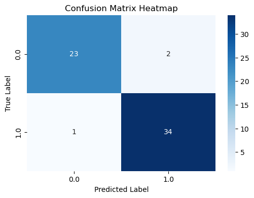
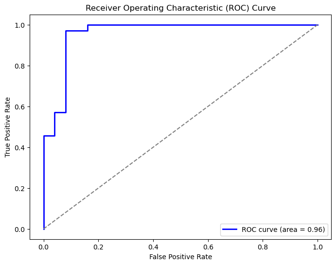
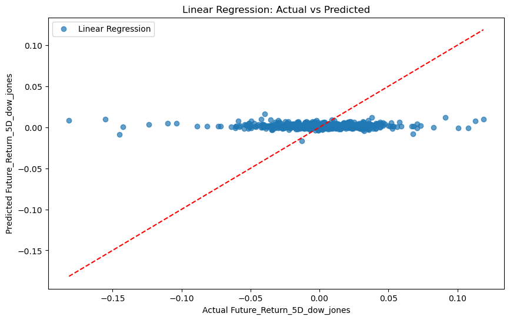
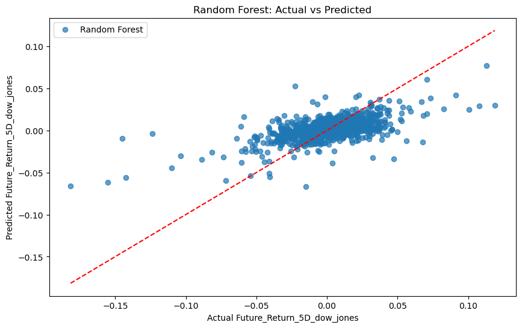
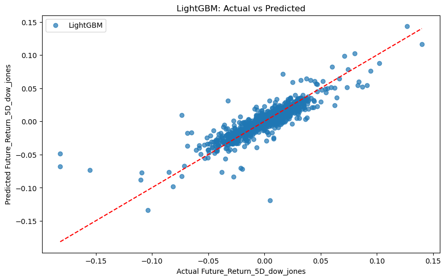
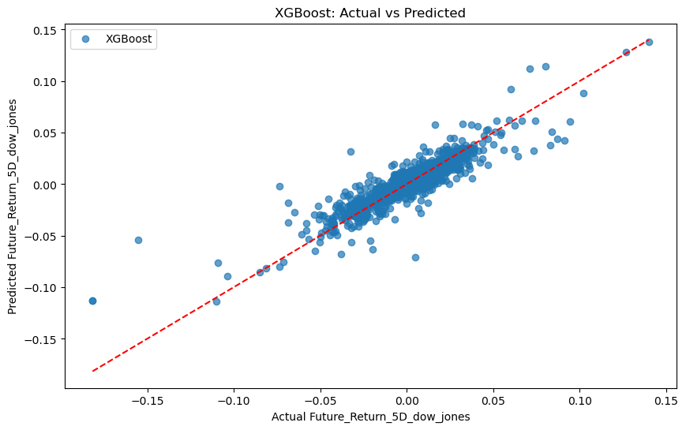

import pandas as pd
import matplotlib.pyplot as plt
# Load the macro_data dataset
macro_data = pd.read_csv("../../data/processed-data/macro_data.csv")
# Display the first few rows to understand the structure
print(macro_data.head())
# Check the distribution of the target variable
target_counts = macro_data['Target_dow_jones'].value_counts()
print(target_counts)
# Plot the distribution of the target variable
plt.figure(figsize=(6, 4))
target_counts.plot(kind='bar', color=['skyblue', 'orange'])
plt.title('Distribution of Target_dow_jones')
plt.xlabel('Target Value')
plt.ylabel('Frequency')
plt.show()
EDA
Instructions
On this page, you will focus on EDA, which is an essential step for future analysis. You should have already selected a specific data-science question that can be addressed in a data-driven way.
It is recommended that you focus on one or two of the following data format, text, tabular, image, geospatial, or network data.
Tabular (e.g. CSV files) and text formats are highly recommended, as these are covered most thoroughly in the course. Deviating from these formats may require additional work on your end. Please avoid timeseries data formats, as these require special methods not covered in the course. You can include as many additional formats as you want. Your project will revolve around the data you gather and will include EDA, analysis, visualization, and storytelling.
EDA:
Begin gathering your data and document the methods and sources on the EDA page of your project. Include screenshots to illustrate the EDA process without displaying entire datasets. Ensure transparency so anyone can replicate your work.
Saving the raw data
- During the collection phase, save the collected data locally to the
raw-datafolder, in the root of the project, for later processing.- Do not sync this folder to GitHub.
- You should also save files you download manually from online to this folder
Requirements:
- Your data must be relevant to the project’s overall goals and help solve your research questions.
- You must use at least one API to collect your data.
- Ensure you have at least one regression target: a continuous quantity that can be used for regression prediction with other features.
- Ensure you have at least one binary classification target: a two-class (A,B) label that can be predicted using other features.
- Ensure you have at least one multi-classification target: a multi-class (A,B,C …) label that can be predicted using other features.
- Do not use a Kaggle topic—this project is meant to simulate a real-world project. Kaggle datasets are typically too clean and have already been prepped for analysis, which doesn’t align with the project’s goals.
Remember, data is about quality, not quantity, so avoid handling large datasets unless necessary. Focus on data that tells a compelling story and supports the techniques you will apply (e.g., clustering, classification, regression).
What do include on this page
To ensure clarity and transparency throughout your project, your EDA documentation should include the following:
Include all code used for EDA in the notebook below
Data Source Information
- Specify where the data comes from, whether public datasets, APIs, or original collection.
- Provide links to datasets or API documentation and explain their relevance to the project.
EDA Methods
- If you used an API or web scraping, explain the tools (e.g.,
BeautifulSoup,Selenium) and the process. - Include links to your code for replicating EDA.
- If you used an API or web scraping, explain the tools (e.g.,
Data Structure and Format
- Describe the structure of your raw data (e.g., rows, columns, data types) and its format (CSV, JSON, etc.).
Linking to Data
- Include links to the raw dataset, ensuring transparency and allowing replication.
Code and Reproducibility
- Link to all relevant code, including EDA , with clear documentation to enable replication.
Transparency and Replicability
- Ensure your entire workflow is transparent and reproducible by linking all data, code, and documentation. This allows others to follow your process from start to finish.
Methods
Document an overview summary of the methods you used on this page
Code
Here you provide your source code used to do this section of the project
Exmaple
In the following code, we first utilized the requests library to retrieve the HTML content from the Wikipedia page. Afterward, we employed BeautifulSoup to parse the HTML and locate the specific table of interest by using the find function. Once the table was identified, we extracted the relevant data by iterating through its rows, gathering country names and their respective populations. Finally, we used Pandas to store the collected data in a DataFrame, allowing for easy analysis and visualization. The data could also be optionally saved as a CSV file for further use.1
date_x GDP CPI Unemployment FedFundsRate M2 \
0 2000-01-01 -1.419333 -1.594756 -0.867414 1.754717 -1.259868
1 2000-02-01 -1.371109 -1.576251 -0.816379 1.893549 -1.257353
2 2000-03-01 -1.371109 -1.549815 -0.867414 1.953048 -1.251527
3 2000-04-01 -1.371735 -1.552459 -0.969482 2.037339 -1.240917
4 2000-05-01 -1.371109 -1.544528 -0.867414 2.161296 -1.243205
Umscent real_estate Exports Imports ... MACD_Lag2_dow_jones \
0 2.199732 -1.446673 -1.458048 -1.614811 ... -65.554617
1 2.146820 -1.436692 -1.391110 -1.523412 ... -65.554617
2 1.829348 -1.421047 -1.391110 -1.523412 ... -65.554617
3 1.988084 -1.402256 -1.395372 -1.552202 ... -65.554617
4 2.101467 -1.381961 -1.391110 -1.523412 ... -65.554617
Close_Lag2_dow_jones Volume_Lag2_dow_jones RSI_Lag3_dow_jones \
0 10090.900391 160980000.0 46.925369
1 10090.900391 160980000.0 46.925369
2 10090.900391 160980000.0 46.925369
3 10090.900391 160980000.0 46.925369
4 10090.900391 160980000.0 46.925369
MACD_Lag3_dow_jones Close_Lag3_dow_jones Volume_Lag3_dow_jones \
0 -50.963179 10222.030273 172820000.0
1 -50.963179 10222.030273 172820000.0
2 -50.963179 10222.030273 172820000.0
3 -50.963179 10222.030273 172820000.0
4 -50.963179 10222.030273 172820000.0
Target_dow_jones Future_Return_5D_dow_jones date_y
0 0.0 -0.034598 2001-08-31
1 0.0 -0.034598 2001-08-31
2 0.0 -0.034598 2001-08-31
3 0.0 -0.034598 2001-08-31
4 0.0 -0.034598 2001-08-31
[5 rows x 189 columns]
Target_dow_jones
1.0 172
0.0 127
Name: count, dtype: int64
from sklearn.model_selection import train_test_split
from sklearn.preprocessing import StandardScaler
# Prepare feature matrix X and target vector y
X = macro_data.drop(columns=['Target_dow_jones', 'date_x', 'date_y'], errors='ignore')
y = macro_data['Target_dow_jones']
# Select only numeric columns
X = X.select_dtypes(include=['float64', 'int64'])
# Handle missing values
X = X.fillna(X.mean())
# Split the data
X_train, X_test, y_train, y_test = train_test_split(
X, y, test_size=0.2, random_state=42, stratify=y)
# Scale the features
scaler = StandardScaler()
X_train = scaler.fit_transform(X_train)
X_test = scaler.transform(X_test)
# Print dataset shapes
print(f"Training set shape: {X_train.shape}")
print(f"Testing set shape: {X_test.shape}")
Training set shape: (239, 184)
Testing set shape: (60, 184)
from sklearn.linear_model import LogisticRegression
from sklearn.metrics import accuracy_score, classification_report, confusion_matrix
import os
# Create logistic regression model
model = LogisticRegression(max_iter=1000)
# Train the model
model.fit(X_train, y_train)
# Make predictions
y_pred = model.predict(X_test)
# Calculate accuracy
accuracy = accuracy_score(y_test, y_pred)
print(f"Model Accuracy: {accuracy:.2f}")
# Generate detailed performance metrics
print("\nClassification Report:")
print(classification_report(y_test, y_pred))
print("\nConfusion Matrix:")
print(confusion_matrix(y_test, y_pred))
# Store results
results = pd.DataFrame({
'Actual': y_test,
'Predicted': y_pred
})
# Create output directory
output_dir = "../../data/visualized-data"
os.makedirs(output_dir, exist_ok=True)
Model Accuracy: 0.95
Classification Report:
precision recall f1-score support
0.0 0.96 0.92 0.94 25
1.0 0.94 0.97 0.96 35
accuracy 0.95 60
macro avg 0.95 0.95 0.95 60
weighted avg 0.95 0.95 0.95 60
Confusion Matrix:
[[23 2]
[ 1 34]]
import seaborn as sns
from sklearn.metrics import confusion_matrix
import matplotlib.pyplot as plt
# Calculate confusion matrix
cm = confusion_matrix(y_test, y_pred)
# Create heatmap visualization
plt.figure(figsize=(6, 4))
sns.heatmap(
cm,
annot=True,
fmt="d",
cmap="Blues",
xticklabels=['0.0', '1.0'],
yticklabels=['0.0', '1.0']
)
plt.title("Confusion Matrix Heatmap")
plt.xlabel("Predicted Label")
plt.ylabel("True Label")
plt.show()

from sklearn.metrics import roc_curve, auc
import matplotlib.pyplot as plt
# Calculate prediction probabilities
y_proba = model.predict_proba(X_test)[:, 1]
# Compute ROC curve and AUC
fpr, tpr, thresholds = roc_curve(y_test, y_proba)
roc_auc = auc(fpr, tpr)
# Create ROC curve plot
plt.figure(figsize=(8, 6))
plt.plot(
fpr, tpr,
color='blue',
lw=2,
label=f'ROC curve (area = {roc_auc:.2f})'
)
# Add diagonal reference line
plt.plot([0, 1], [0, 1], color='grey', linestyle='--')
# Configure plot appearance
plt.title("Receiver Operating Characteristic (ROC) Curve")
plt.xlabel("False Positive Rate")
plt.ylabel("True Positive Rate")
plt.legend(loc="lower right")
plt.show()

import pandas as pd
import numpy as np
from sklearn.model_selection import train_test_split
from sklearn.preprocessing import StandardScaler
# Load data
data = pd.read_csv("../../data/processed-data/merged_assets.csv")
# Select features for prediction
selected_features = [
'Daily_Return_sp500',
'Volatility_sp500',
'MA_50_sp500',
'MA_200_sp500'
]
target = 'Future_Return_5D_dow_jones'
# Clean data
data = data.dropna(subset=selected_features + [target])
# Split features and target
X = data[selected_features]
y = data[target]
# Split train/test sets
X_train, X_test, y_train, y_test = train_test_split(
X, y, test_size=0.2, random_state=42)
# Scale features
scaler = StandardScaler()
X_train = scaler.fit_transform(X_train)
X_test = scaler.transform(X_test)
from sklearn.linear_model import LinearRegression
from sklearn.ensemble import RandomForestRegressor
from sklearn.metrics import mean_squared_error, r2_score
# Initialize models
lr_model = LinearRegression()
rf_model = RandomForestRegressor(n_estimators=100, random_state=42)
# Train and predict with Linear Regression
lr_model.fit(X_train, y_train)
y_pred_lr = lr_model.predict(X_test)
# Train and predict with Random Forest
rf_model.fit(X_train, y_train)
y_pred_rf = rf_model.predict(X_test)
# Calculate performance metrics
mse_lr = mean_squared_error(y_test, y_pred_lr)
r2_lr = r2_score(y_test, y_pred_lr)
mse_rf = mean_squared_error(y_test, y_pred_rf)
r2_rf = r2_score(y_test, y_pred_rf)
# Print results
print("Linear Regression:")
print(f"Mean Squared Error (MSE): {mse_lr:.4f}")
print(f"R^2 Score: {r2_lr:.4f}\n")
print("Random Forest Regression:")
print(f"Mean Squared Error (MSE): {mse_rf:.4f}")
print(f"R^2 Score: {r2_rf:.4f}")
Linear Regression:
Mean Squared Error (MSE): 0.0006
R^2 Score: -0.0070
Random Forest Regression:
Mean Squared Error (MSE): 0.0004
R^2 Score: 0.3624
import matplotlib.pyplot as plt
# Plot Linear Regression results
plt.figure(figsize=(10, 6))
plt.scatter(
y_test,
y_pred_lr,
alpha=0.7,
label="Linear Regression"
)
plt.plot(
[min(y_test), max(y_test)],
[min(y_test), max(y_test)],
color='red',
linestyle='--'
)
plt.title("Linear Regression: Actual vs Predicted")
plt.xlabel("Actual Future_Return_5D_dow_jones")
plt.ylabel("Predicted Future_Return_5D_dow_jones")
plt.legend()
plt.show()
# Plot Random Forest results
plt.figure(figsize=(10, 6))
plt.scatter(
y_test,
y_pred_rf,
alpha=0.7,
label="Random Forest"
)
plt.plot(
[min(y_test), max(y_test)],
[min(y_test), max(y_test)],
color='red',
linestyle='--'
)
plt.title("Random Forest: Actual vs Predicted")
plt.xlabel("Actual Future_Return_5D_dow_jones")
plt.ylabel("Predicted Future_Return_5D_dow_jones")
plt.legend()
plt.show()


from xgboost import XGBRegressor
from lightgbm import LGBMRegressor
from sklearn.metrics import mean_squared_error, r2_score
# Initialize models
xgb_model = XGBRegressor(n_estimators=100, random_state=42)
lgbm_model = LGBMRegressor(n_estimators=100, random_state=42)
# Train and predict with XGBoost
xgb_model.fit(X_train, y_train)
y_pred_xgb = xgb_model.predict(X_test)
# Train and predict with LightGBM
lgbm_model.fit(X_train, y_train)
y_pred_lgbm = lgbm_model.predict(X_test)
# Calculate performance metrics for XGBoost
mse_xgb = mean_squared_error(y_test, y_pred_xgb)
r2_xgb = r2_score(y_test, y_pred_xgb)
# Calculate performance metrics for LightGBM
mse_lgbm = mean_squared_error(y_test, y_pred_lgbm)
r2_lgbm = r2_score(y_test, y_pred_lgbm)
# Print results
print("XGBoost Regression:")
print(f"Mean Squared Error (MSE): {mse_xgb:.4f}")
print(f"R^2 Score: {r2_xgb:.4f}\n")
print("LightGBM Regression:")
print(f"Mean Squared Error (MSE): {mse_lgbm:.4f}")
print(f"R^2 Score: {r2_lgbm:.4f}")
[LightGBM] [Info] Auto-choosing col-wise multi-threading, the overhead of testing was 0.000072 seconds.
You can set `force_col_wise=true` to remove the overhead.
[LightGBM] [Info] Total Bins 1020
[LightGBM] [Info] Number of data points in the train set: 4670, number of used features: 4
[LightGBM] [Info] Start training from score 0.001494
XGBoost Regression:
Mean Squared Error (MSE): 0.0004
R^2 Score: 0.2709
LightGBM Regression:
Mean Squared Error (MSE): 0.0004
R^2 Score: 0.2653
import matplotlib.pyplot as plt
# Plot XGBoost results
plt.figure(figsize=(10, 6))
plt.scatter(
y_test,
y_pred_xgb,
alpha=0.7,
label="XGBoost"
)
plt.plot(
[min(y_test), max(y_test)],
[min(y_test), max(y_test)],
color='red',
linestyle='--'
)
plt.title("XGBoost: Actual vs Predicted")
plt.xlabel("Actual Future_Return_5D_dow_jones")
plt.ylabel("Predicted Future_Return_5D_dow_jones")
plt.legend()
plt.show()
# Plot LightGBM results
plt.figure(figsize=(10, 6))
plt.scatter(
y_test,
y_pred_lgbm,
alpha=0.7,
label="LightGBM"
)
plt.plot(
[min(y_test), max(y_test)],
[min(y_test), max(y_test)],
color='red',
linestyle='--'
)
plt.title("LightGBM: Actual vs Predicted")
plt.xlabel("Actual Future_Return_5D_dow_jones")
plt.ylabel("Predicted Future_Return_5D_dow_jones")
plt.legend()
plt.show()
import pandas as pd
import numpy as np
# Load the dataset
data = pd.read_csv("../../data/processed-data/merged_assets.csv")
# Create lagged features
data['Lag1_Return'] = data['Future_Return_5D_dow_jones'].shift(1)
data['Lag2_Return'] = data['Future_Return_5D_dow_jones'].shift(2)
# Calculate rolling statistics
data['Rolling_Mean_5'] = data['Future_Return_5D_dow_jones'].rolling(window=5).mean()
data['Rolling_Std_5'] = data['Future_Return_5D_dow_jones'].rolling(window=5).std()
# Remove rows with missing values
data = data.dropna()
# Display results
print(data[[
'Future_Return_5D_dow_jones',
'Lag1_Return',
'Lag2_Return',
'Rolling_Mean_5',
'Rolling_Std_5'
]].head())
Future_Return_5D_dow_jones Lag1_Return Lag2_Return Rolling_Mean_5 \
4 -0.045420 -0.030264 -0.018099 -0.016608
5 -0.037069 -0.045420 -0.030264 -0.025229
6 -0.018466 -0.037069 -0.045420 -0.029863
7 -0.024781 -0.018466 -0.037069 -0.031200
8 -0.031627 -0.024781 -0.018466 -0.031473
Rolling_Std_5
4 0.022281
5 0.019495
6 0.011857
7 0.010499
8 0.010486
from xgboost import XGBRegressor
from lightgbm import LGBMRegressor
from sklearn.model_selection import train_test_split
from sklearn.metrics import mean_squared_error, r2_score
# Define features including lag and rolling features
features = [
'Daily_Return_sp500',
'Volatility_sp500',
'Lag1_Return',
'Lag2_Return',
'Rolling_Mean_5',
'Rolling_Std_5'
]
# Prepare features and target
X = data[features]
y = data['Future_Return_5D_dow_jones']
# Split into train/test sets
X_train, X_test, y_train, y_test = train_test_split(
X, y, test_size=0.2, random_state=42)
# Initialize models with optimized parameters
xgb_model = XGBRegressor(
learning_rate=0.1,
max_depth=5,
n_estimators=300,
random_state=42
)
lgbm_model = LGBMRegressor(
learning_rate=0.1,
max_depth=5,
n_estimators=300,
random_state=42
)
# Train and predict with XGBoost
xgb_model.fit(X_train, y_train)
y_pred_xgb = xgb_model.predict(X_test)
# Train and predict with LightGBM
lgbm_model.fit(X_train, y_train)
y_pred_lgbm = lgbm_model.predict(X_test)
# Evaluate models
mse_xgb = mean_squared_error(y_test, y_pred_xgb)
r2_xgb = r2_score(y_test, y_pred_xgb)
mse_lgbm = mean_squared_error(y_test, y_pred_lgbm)
r2_lgbm = r2_score(y_test, y_pred_lgbm)
# Print results
print("XGBoost Regression:")
print(f"Mean Squared Error (MSE): {mse_xgb:.4f}")
print(f"R^2 Score: {r2_xgb:.4f}\n")
print("LightGBM Regression:")
print(f"Mean Squared Error (MSE): {mse_lgbm:.4f}")
print(f"R^2 Score: {r2_lgbm:.4f}")
XGBoost Regression:
Mean Squared Error (MSE): 0.0001
R^2 Score: 0.8015
LightGBM Regression:
Mean Squared Error (MSE): 0.0002
R^2 Score: 0.7504
import matplotlib.pyplot as plt
# Create scatter plot for XGBoost results
plt.figure(figsize=(10, 6))
plt.scatter(
y_test,
y_pred_xgb,
alpha=0.7,
label="XGBoost"
)
plt.plot(
[min(y_test), max(y_test)],
[min(y_test), max(y_test)],
color='red',
linestyle='--'
)
plt.title("XGBoost: Actual vs Predicted")
plt.xlabel("Actual Future_Return_5D_dow_jones")
plt.ylabel("Predicted Future_Return_5D_dow_jones")
plt.legend()
plt.show()
# Create scatter plot for LightGBM results
plt.figure(figsize=(10, 6))
plt.scatter(
y_test,
y_pred_lgbm,
alpha=0.7,
label="LightGBM"
)
plt.plot(
[min(y_test), max(y_test)],
[min(y_test), max(y_test)],
color='red',
linestyle='--'
)
plt.title("LightGBM: Actual vs Predicted")
plt.xlabel("Actual Future_Return_5D_dow_jones")
plt.ylabel("Predicted Future_Return_5D_dow_jones")
plt.legend()
plt.show()

